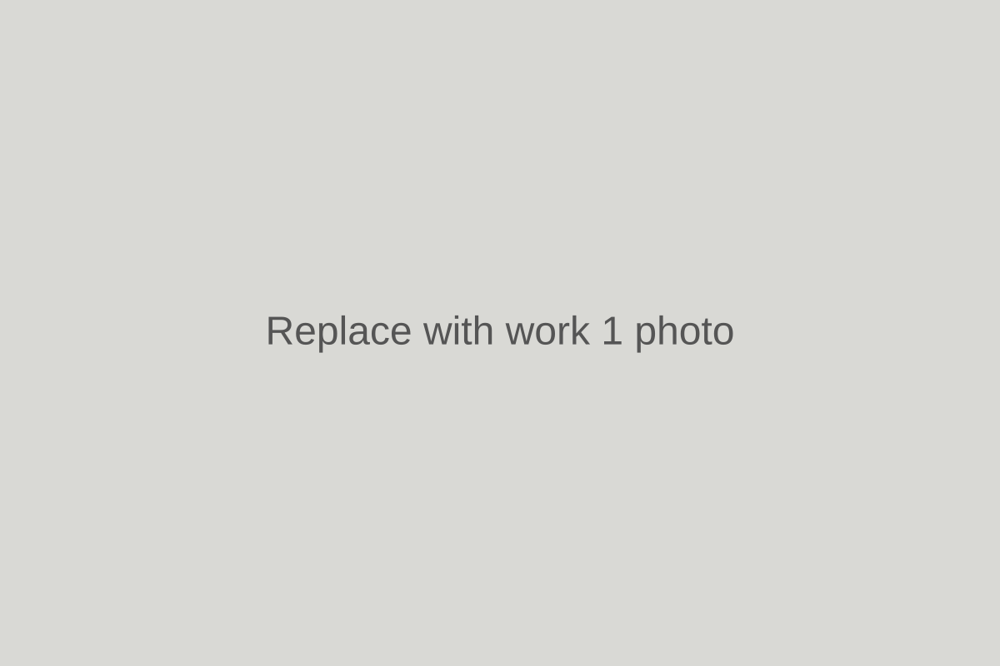
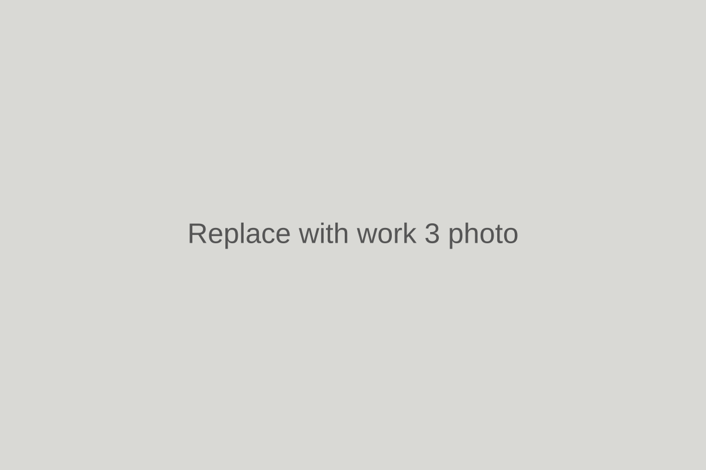
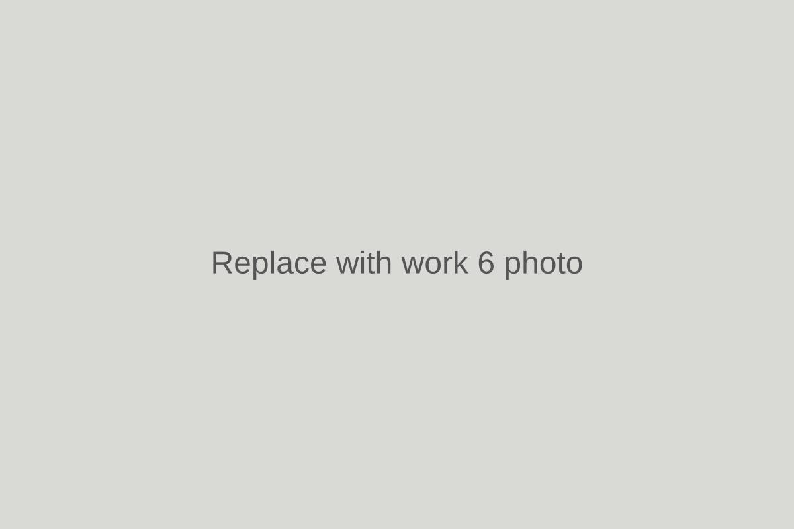

▰
Skimming
Smooth, clean skim finishes ready for decorating.
Professional plastering for homes and small commercial jobs across South Wales. Skimming, boarding, patch repairs, ceilings and more.
Reliable plastering with a clean, smooth finish and attention to the details that matter.
Smooth, clean skim finishes ready for decorating.
Boarding walls and ceilings with a solid finish.
Repairs to damaged walls, ceilings and old plaster.
Overboarding and skimming for tired or damaged ceilings.
Fresh plasterwork to help transform rooms.
Neat edges, clean work and a professional finish.
A selection of the type of plastering work I take on. Real project photos can be added here.

Skimming
Patch Repair
Clean FinishFriendly, reliable plastering across South Wales, with a focus on tidy work and quality finishes.
Send over a few details about the job and I’ll get back to you about a quote.
Call for a Quote